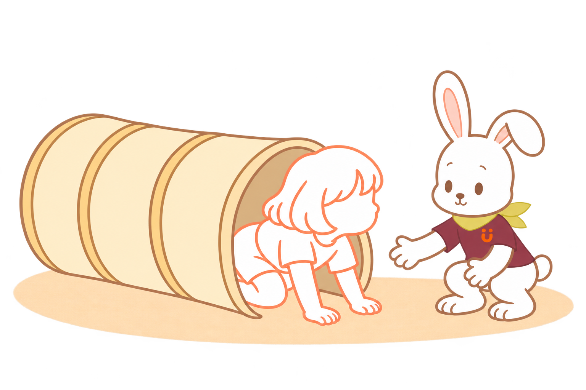

01
むこうに、なにが ある？
きみが トンネルを、のぞいた。

ぼくは、むこうがわへ。
きみから、ぼくが みえるかな。
02
まだ、ここで。
すぐには、はいらないんだね。
ぼくは、でぐちの よこで まつ。
……あれ。きみが、よこへ。
おうちの人へ · のぞく時間も遊びに
入口と出口が見える短く広いトンネルを。入るように急がせず、触る・のぞく・離れる様子を見守ります。
03
こっちから、こんにちは！
トンネルの よこを、とことこ。

きみが、ぼくの ところへ。
その みちを、みつけたんだね。
おうちの人へ · 回り道も選べるように
トンネルの横にも通れる空間を残します。くぐらずに会いに来ることも、その子が見つけた方法です。
04
ここ、通れるかな？
こんどは、入口に てを ついた。
あたまを さげて、おひざも まげて。
ぼくは、むこうで まっているよ。
05
ひょい。するん。
あたまが、でてきた。

ここからも、こんにちは！
きみに あえて、うれしいな。
おうちの人へ · 通りやすくするコツ
体や衣服が引っかからない広さに。出口側を空け、手足を引いて通しません。難しければ、もっと広い入口や短い道に変えます。
おはなしの あとに
通り方は、
ひとつじゃない。
のぞいて確かめる。体を小さくする。横を通ってみる。Genは、子どもが選ぶ動きを見ながら、出口の脇で待ち、横の道も選べるようにします。くぐれたかだけでなく、何が気になり、どう試したかを一緒に楽しめたら。
この遊びのねらい
- 体と空間：頭や手足の位置、体の大きさと入口の広さに触れる経験。
- 姿勢を変える：座る・手をつく・かがむなど、その子に合う動き。
- 方法を探す：近づく、のぞく、通る、回り込む。興味から動きを選ぶ経験。
見るだけの日も、途中で戻る日も。通り抜けることだけが遊びのゴールではありません。
準備と、遊びを変える目安
大人がそばで見守り、平らで滑りにくい床に、短く十分に広いトンネルを置きます。顔と出口が見え、倒れたり崩れたりしないものを使い、入口・出口・横の道を空けます。
怖がるときは距離を取り、外からのぞくだけでも。中に入った子どもの手足を引っぱったり、出口を塞いだりしません。痛みや疲れがあるときは休みます。
身体の支え方や運動に制限がある場合は担当の専門職と相談してください。遊びのねらいは、発達の効果や達成を約束するものではありません。
参考：NHS · Gross Motor Skills
固有感覚・運動企画の観点を参考にしたHugMapの遊び案です。